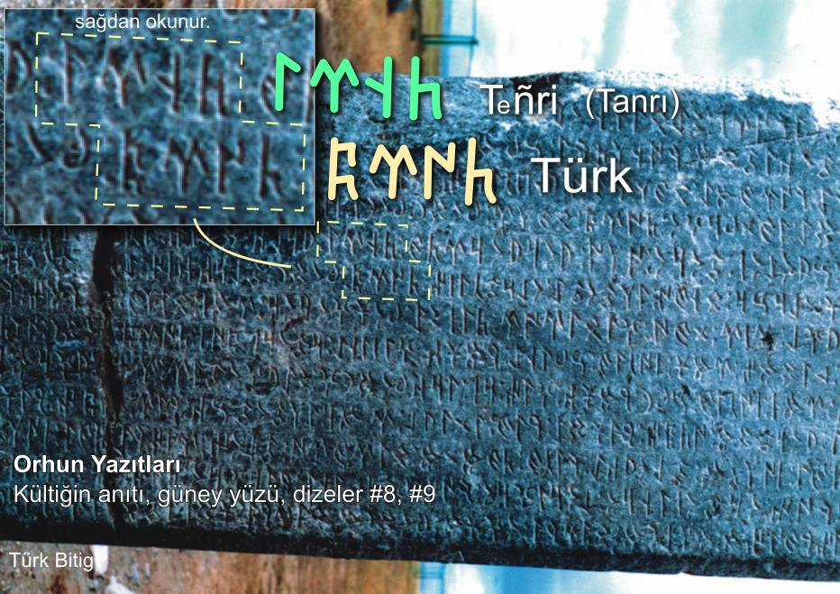
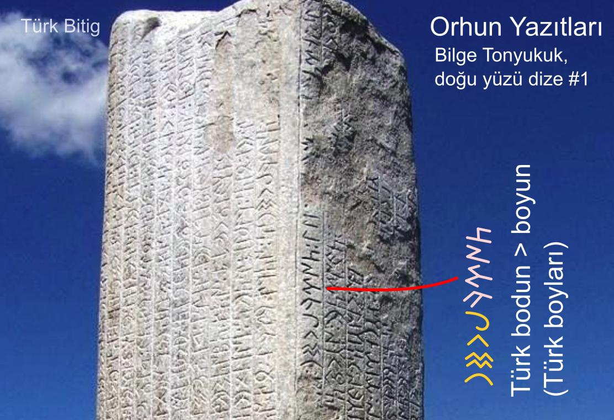

Göktürkçe Türk Kelimesi
Türk kelimesi, tarih buyunca gerek ince gerek Farsca veya Arapça metinlerde sıkça geçer. Türklerin kendi yazdıkları metinlerde ise, bugün Göktürkçe veya Göktürk Alfabesi dediimiz alfabe ile ilk kez Orhun Abidelerinde aaıdaki iki ekilde yazılmıtır.
Türk 側
Türk 側
Kültiin Abidesindeki yazı, Türk orduları komutanı Kültiin öld羹羹nde, onun anısına aabeyi Hükümdar Bilge Kaan tarafından bizzat yazdırılmıtır. Tonyukuk Abidelerindeki yazı ise bavezir Bilge Tonyukuk tarafından yazdırılmıtır. Bu Kelime Orhun Abidelerinde "Türk" veya "Türkbodun" (Türkboyun/boyları) eklinde onlarca defa yazılmıtır.

Orhun Yazıtları, Kültiin anıtında Göktürkçe Türk ve Tanrı kelimeleri görülmektedir.

Orhun Yazıtları, Bilge Tonyukuk anıtlarında "Türk Boyları" kelimeleri görülmektedir.